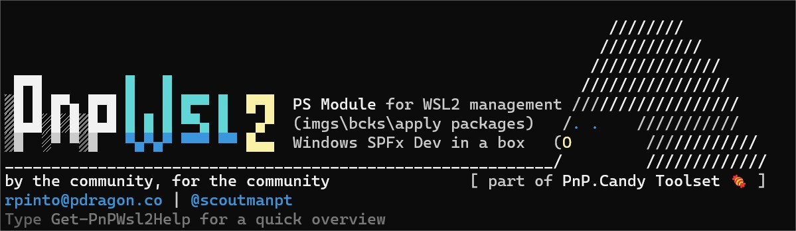

Why this module?
I love command line tools, but most of them don't have autocompletion, making us revisit command syntax help over and over again.
I found myself yearning for a more streamlined approach to manage my WSL2 instances effortlessly - from backups and checkpoints to seamlessly injecting new bits into instances.
Automation became the name of the game to make the whole process a delightful breeze.
Setting up the SharePoint Framework development toolchain is documented ... but it's still a lot of work to do it manually, if you are a consultant in multiple clients, multiple tenants, multiple projects is daunting and it can be messy.
I also lead IT and development teams, and I wanted to make it easier for them to get started with WSL2 and SharePoint Framework development environments ...and PowerShell ...and Azure Devops ...and ...you get the idea.
Plus, I was actually tired of typing the same commands over and over again (call me lazy 🤠 ).
Usage
Currently I'm using PnP.WSL2 on a daily basis: its ideal for quickly ramping up a new ready-to-go SharePoint Framework development environment, easily install PowerShell Core environment with already installed PnP.PowerShell , easily install all needed cli : pnpm365 , azure, etc ...
As an extra ... you can even add your own custom scripts\packages to be executed in any WSL2 instance ( that was really why this project started in the first place )
Cool, hum?
Goals
- Make it easy to manage WSL2 instances.
- Checkpoints, export/import, copy wsl instances, etc.
- Automate WSL2 instances deploying and add extra features to them (like adding SharePoint Framework development environments, git configurations, powershell, python core, machine learning envs, bits and other tools\apps inside a linux distribution).
- Central place to store collection of scripts and tools to make it easier in your IT\Dev\DevOps life.
I hope this is helpful !
We continually enhance this module with new features and tools; your suggestions are welcome, and we invite you to contribute to the project.
Enjoy !